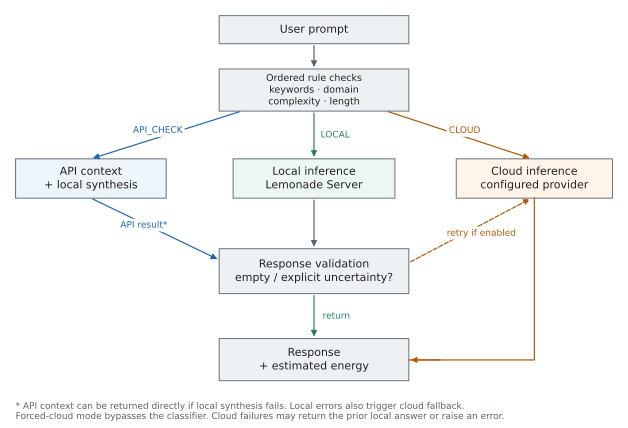
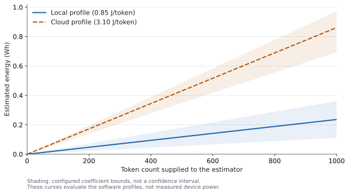

SEVEN in use
A screen recording of the original terminal application, showing a prompt moving through SEVEN’s interface.
Classify Before You Compute
SEVEN makes a routing decision before model inference: try a local model, retrieve current information for a local answer, or call a cloud model. The aim is to avoid using the same compute path for every request.
The classifier uses keyword checks and prompt length rather than another language model. This avoids an extra inference call; the checks still execute on the CPU. It is a practical heuristic, not a guarantee that a small model can answer a prompt correctly.
Model routing and cascading are explored in RouteLLM and FrugalGPT. Those studies motivate the approach; their reported quality and cost results are not SEVEN benchmark results.
Three Paths, One Router
route_prompt() coordinates the execution path. Real-time keywords select an API-context path, complexity checks select the cloud path, and the default is a local model served through Lemonade. A user can also force cloud execution.

The API path retrieves weather, cryptocurrency or news context and normally asks the local model to synthesise an answer. It is not a zero-inference route. When local synthesis fails, the API helper can return the retrieved context directly.
When enabled, post-routing validation escalates an empty local answer or explicit uncertainty phrases such as “I don’t know” to the cloud. Local backend errors also trigger a fallback. This catches specific failure signals; it does not detect every incorrect answer.
The Ordered Checks
The first matching rule wins. The classifier in heuristics.py applies these checks:
- Real-time terms: select
API_CHECKfor terms such as weather, news, prices or current information. - Specialised domains: select
CLOUDfor configured technical domain phrases. - Complexity markers: select
CLOUDfor configured requests such as detailed writing, proofs and multi-step explanations. - Prompt length: select
CLOUDabove 150 words. - Otherwise: try
LOCAL.
Because these are substring and length checks, wording can change the route. Routing quality needs evaluation on a labelled prompt set rather than being inferred from the rules alone.
What the Energy Display Calculates
SEVEN’s energy display uses software profiles. With a per-token coefficient, the estimator calculates E (Wh) = token count × J/token ÷ 3600. These are modelled quantities, not readings from a power meter.

| Token count | Local estimate (Wh) | Cloud estimate (Wh) |
|---|---|---|
| 100 | 0.0236 | 0.0861 |
| 500 | 0.1181 | 0.4306 |
| 1,000 | 0.2361 | 0.8611 |
When token usage is unavailable, this implementation substitutes 500 tokens. The local result is compared with a cloud estimate using the same token count. A change of profile changes the estimate. API/network energy and the full cost of multiple inference attempts are not comprehensively measured by this calculation.
What This Demonstrates
The implementation connects a terminal interface, rule-based routing, a local inference server, live-data tools and cloud fallback. The recording demonstrates its use; the diagram describes its control flow; the plot makes its energy assumptions inspectable.
A measured efficiency claim would additionally need recorded device power, response quality, token counts, latency and escalation rates under a defined workload. The code and coefficient plots alone do not establish a universal energy-saving percentage.
Sources
- SEVEN source snapshot: routing, API synthesis, heuristics and energy profiles.
- RouteLLM: Learning to Route LLMs from Preference Data, 2024.
- FrugalGPT: How to Use Large Language Models While Reducing Cost and Improving Performance, 2023.
- HKUST Library: Using AI to Create Scientific Figures Responsibly, figure-method guidance.